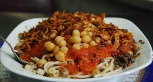

koshary

Description
Lentils, rice and pasta are cooked and then served in a spicy tomato sauce. This is a typical Egyptian dish that is very good and cheap over here! Puree the sauce in a food processor if you like a smoother texture.
ingredients
-
3 tablespoons brown lentils
-
1 cups water
-
3 tablespoons uncooked long grain rice
-
¼ cup elbow macaroni
-
½ tablespoon vegetable oil
-
½ large onions, chopped
1 cloves garlic, minced
-
¼ (15.5 ounce) can diced tomatoes
-
⅝ teaspoon red pepper flakes, or to taste
-
salt and pepper to taste
steps
-
Combine the lentils and water in a large saucepan. Bring to a boil, then simmer over medium heat for 25 minutes. Add the rice to the lentils, and continue to simmer for an additional 20 minutes, or until rice is tender.
-
Fill a separate saucepan with lightly salted water and bring to a boil. Add the macaroni and cook until tender, about 8 minutes. Drain.
-
Meanwhile, heat the vegetable oil in a large skillet over medium heat. Add onion and garlic; cook and stir until onion is lightly browned. Pour in the tomatoes and season with red pepper flakes, salt and pepper. Simmer over medium heat for 10 to 20 minutes.
-
Step 4
In a large serving dish, stir together the lentils, rice and macaroni. Mix in the tomato sauce until evenly coated.